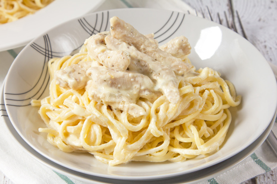

| One Pot Chicken Alfredo Ingredients |
Directions |
| 2 tbsp. extra-virgin olive oil |
In a skillet over medium heat, heat oil. Add chicken and season with salt and pepper. Cook until golden and no longer pink, 8 minutes per side. Transfer to a plate to rest, then slice. |
| 2 boneless skinless chicken breasts |
To the pan, add milk, chicken stock and garlic.
Season with salt and pepper and bring to a simmer. Add pasta,
stirring frequently for about 3 minutes. Let cook about 8 minutes more, or to your desired doneness. |
| kosher salt |
Add cream and Parmesan and stir until combined. Simmer 2 more minutes, or until the sauce thickens, and season again with salt and pepper. |
| Freshly ground black pepper |
Remove pan from heat and stir in sliced chicken. Serve immediately with parsley. |
| 1 1/2 c. whole milk |
| 1 1/2 c. chicken stock |
| 2 cloves garlic, minced |
| 8 oz. fetuccini |
| 1/2 c. heavy cream |
| 1 c. freshly grated Parmesan |
| Chopped fresh parsley, for garnish |

| INGREDIENTS |
DIRECTIONS |
| FOR THE CHICKEN:
2 lb boneless , skinless chicken thighs, cut into 1″ pieces
|
To make the sauce combine the 1 tablespoon cornstarch, rice wine,
water, sesame oil, soy sauce, sugar, white vinegar and orange zest.
|
| 1 egg |
To coat the chicken add the egg, salt, pepper and 1 tablespoon oil
into a bowl and whisk together in a large bowl.
|
| 1 1/2 tsp salt |
In a separate bowl, add 1/2 cup corn
starch and flour and mix well.
|
| 1 pinch black pepper |
In a large frying pan or a wok,
heat oil in a wok 375 degrees.
|
| 2 tbsp oil , divided,
plus more for frying
|
Dip chicken pieces in the egg mixture,
then dredge in the flour mixture.
|
| 1/2 cup cornstarch |
Fry the chicken for 3 to 4 minutes or until golden and crisp.
|
| 1/4 cup flour |
Transfer to a cooling rack and repeat with remaining chicken.
|
| FOR THE SAUCE
1 tablespoon cornstarch
|
When you are done with the chicken, drain most of the oil from the pan (leave about a tablespoon).
|
| 2 tablespoons rice wine
|
Add the ginger, garlic and crushed red peppers, cooking for about 10 seconds.
|
| 1/4 cup water |
Add the orange sauce and bring to boil |
| 1 teaspoon sesame oil |
Turn off the heat, and add cooked chicken and stir until well mixed. |
| 3 tablespoons soy sauce |
| zest of 1 orange |
| 2 teaspoons garlic , minced |
| 10 tablespoons sugar |
| 1/2 tsp hot red chili pepper , crushed |
| TO FINISH:
1 1/2 tablespoons ginger root , minced |